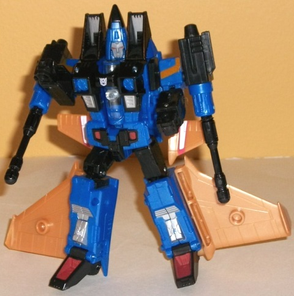
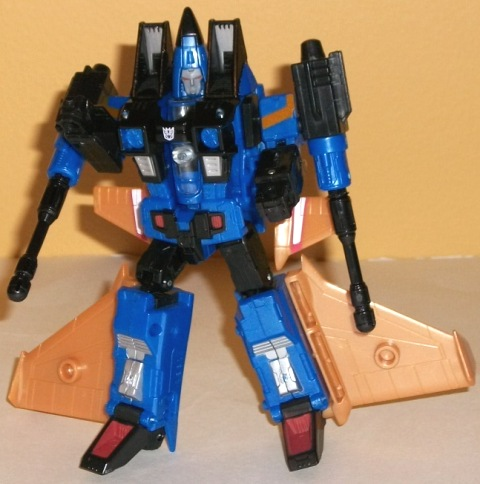

(NOTE: Because this is a repaint, this is not a full-blown review. This mainly covers any changes made to the mold and the color scheme, and merely compares it to Classics Starscream. For a review on the mold itself, read the review of Classics Starscream here .)
The "re-doing" of the
formerly Botcon 2007-exclusive Seekers continues! The color scheme of this
version of Dirge is a moderately dark blue, with black and a goldish brown
being the main secondary colors. The black and dark blue are fairly boring,
but the goldish brown contrasts quite well with both, and is a pretty good
shade of the color. It's a bit too bad that it's entirely on his wings,
though, as used a bit more thoroughly throughout his form would've made
him more eye-catching, even if it isn't
G1-accurate
.
The silver and light red paint apps do help break up the blue and black
a bit by themselves, though I'm not a fan of the deco jobs on his wings--
they may have worked in the '80s, but they look a bit plain these days,
in my opinion.
Unlike his
Botcon
version
, this version of Dirge has completely remolded wings that match
his G1 toy much better. Unforunately, I've always thought Dirge's wings
looked kinda odd without any (significant) vertical wings. I can't put
my finger on exactly why, but it doesn't look nearly as good to me as the
other Seeker's various wing assemblies. In robot mode it's a mixed bag--
the small front wings fold up nicely behind his arms, thus minimizing the
amount they get in the way of arm articulation, but his large back wings
just stick out of the sides without even any real attempt to rotate them
back and out of the way of visibility a little. Other than the wings, Dirge
shares the same changes to this mold that
Classics
Ramjet
had.
Generations Dirge may
have a mold change to his wings to make him more accurate to the G1 toy--
and it's certainly appreciated-- but I've never been a fan of his wing
styles, and the color scheme-- though good-- is a step down from his Botcon
2007 version's template. Obviously this version is a lot cheaper, so if
you're not in the market for the toys from that year, this is an easy recommendation.
If you already have the Botcon 2007 set-- or want other figures in that
set instead-- there's no real reason to get this version instead, remolded
wings or no.
Review by Beastbot